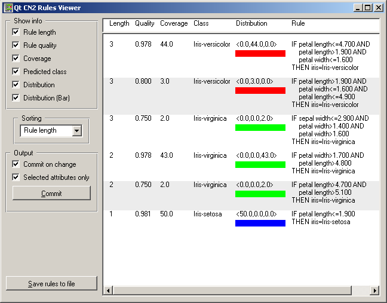

This is documentation for Orange 2.7. For the latest documentation, see Orange 3.
Rule Viewer¶
Widget for visualization of rules.
Signals¶
Inputs:
- A set of rules (RuleClassifier)
Outputs:
- Examples (ExampleTable)
Attribute-valued data set associated with a rule (or rules) selected by the user.
Description¶
This widget visualizes rules learned by rule learning widgets (e.g. CN2). The viewer can, along pre-conditions and prediction of rule, show several rule properties like quality, number of covered learning examples, length, and the class distribution among the covered examples. These criteria can also be used for sorting the list of rules.
The widget also allows selecting one or more rules, in which case it outputs the examples covered by this (these) rules. The signal is sent immediately if Commit on change is checked; otherwise the user needs to push Commit. If Selected attributes only is checked, the output examples are described only by the attributes appearing in the selected rules.
In the snapshot below, the widget outputs the five examples covered by the two selected rules, and although the example table originally contains four attributes (petal and sepal width and length - this is the Iris data set), the example on the output will only be described by the petal width and length as these are the only two attributes appearing in the selected rules and Selected attributes only is checked.
Examples¶
For an example of widget’s use in canvas see documentation about CN2 widget.